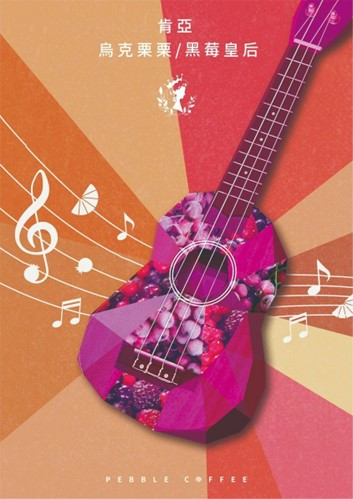

- 
肯亞 烏克栗栗 AB 水洗
商品描述
肯亞 烏克栗栗 AB 水洗 NT450
(商品介紹)
• 商品敘述:
• [強豆來襲] 2022肯亞新產季正式開季
開季強力特惠來襲！請留意信箱報價單訊息！
肯亞 烏克栗栗/黑莓皇后 AB 22/01批次
Kenya Uklili Lot AB 22/01
(30KG繽紛小麻袋附塑膠內袋)
國家 肯亞 (Kenya)
海拔 約1,650m
產區 祈安布 (Kiambu)
品種 SL28, SL34, 少許Ruiru以及Batian
生產者 所屬小農
處理法 傳統肯亞式水洗處理法
非洲式高架棚架日曬乾燥
水分 10.4 %
密度 862 g/l
水活性 0.59
今年的肯亞實在是非常令人驚豔！
本周剛入倉，熱騰騰的烘好上桌的第一輪杯測就令人大家驚呼連連，今年的肯亞好好喝，水分密度水活性也都是上上之選。本批次為烏克栗栗2022產季的第一個批次，醋栗/烏梅/黑莓風味是千挑萬選的必要，不管從酸值、甜感及風味都非常全面的一支佳作。22/01批次選自祈安步(Kiambu)產區，呈現經典肯亞高辨識度的風味特性，黑佳麗、烏梅等主軸調性貫穿全場，話梅、仙楂等風味讓品飲更具層次，招牌的肯亞細緻酸質，除了架出整個風味的骨幹，更襯托出本批次扎實豆性的甜感，生津回味無窮。略帶雪松、梅餅的氣息讓品飲體驗在深邃強勁與虛無縹緲間交錯延伸。
烏克栗栗/黑莓皇后(Uklili) 與暱稱烏克麗麗的四弦琴ukulele有那麼點關係又沒有關係。 Uklili的發想，取自非洲最多人使用的語言之一「斯瓦希里語(kiswahili)」，斯瓦希里語也是肯亞的兩個官方語言之一，另一個官方語言是英文。
Uklili在斯瓦希里語裡的原文是 nyeUsi maLKIa，nyeusi是黑色的意思，malkia則是皇后，合起來就是我們要持呈現的，肯亞在精品咖啡產區中獨樹一格的標誌黑色風華，迷人的黑醋栗的經典風味。在我們巧妙的演譯組合兩個字根，Uklili的中文音譯烏克栗栗，恰如其分的表達出了栗栗分明的風味特色，又結合了四弦琴烏克栗栗輕快又雋永的曲風。
我們每年精挑細選的肯亞批次，並不特別追求知名處理廠，而是以風味及我們實地探訪的判斷為準，往往出現許多膾炙人口的高分佳作(相關資料如文末所附)，許多原本不知名的處理廠也是被我們挖掘出來而成名。
♫ 烏克栗栗/黑莓皇后 AB 22/01批次 風味短評
乾香為黑醋栗、黑莓、烏梅、蔓越莓與洛神香氣。入口即可感受到深邃的黑莓、黑醋栗風味與些許烏梅香氣，緊接著浮現蔓越莓汁及洛神花香，尾韻帶有仙楂梅餅香氣，酸值強勁、風味扎實且層次感複雜多變。